Nuages
Comment faire entrer des nuages dans une grille ? Concevoir une édition à l'aspect encyclopédique et didactique uniquement à partir de la grillede mise en page et d'images.
13,8 x 20 cm 52 pages 2012
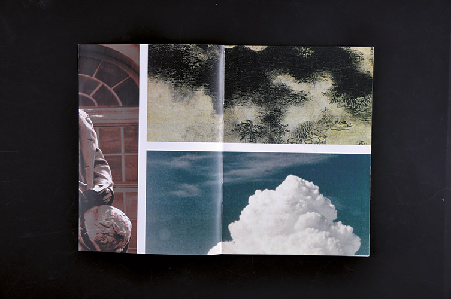
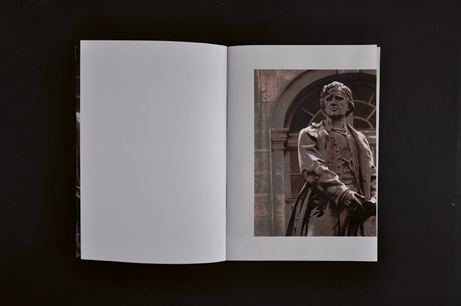
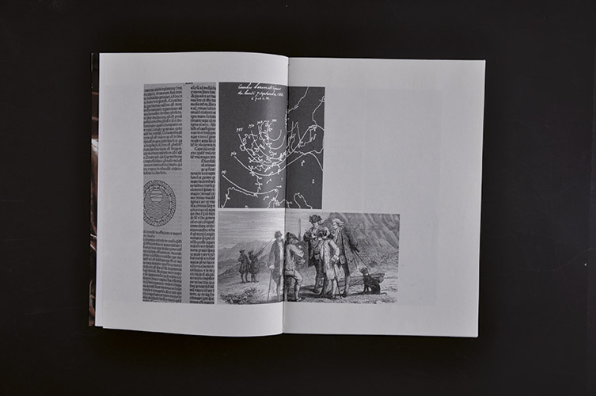
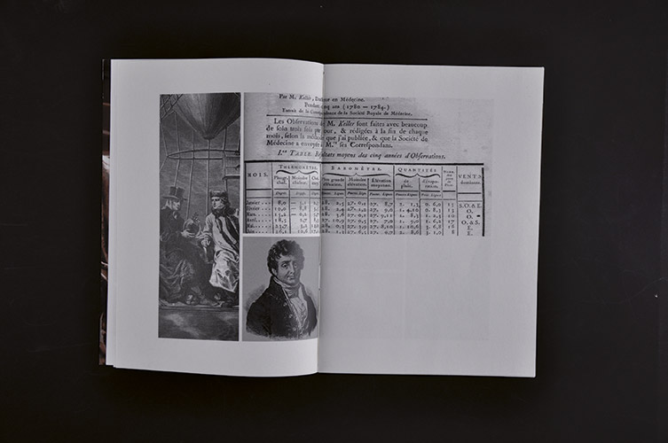
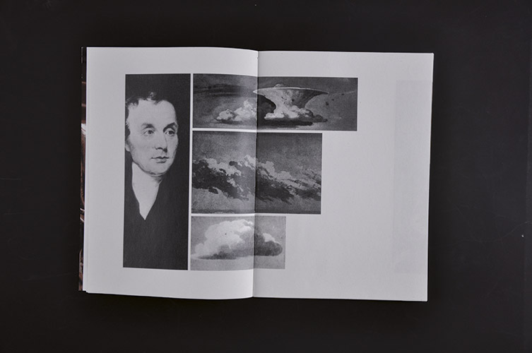
 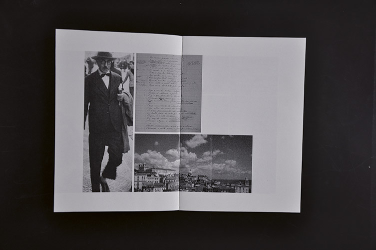
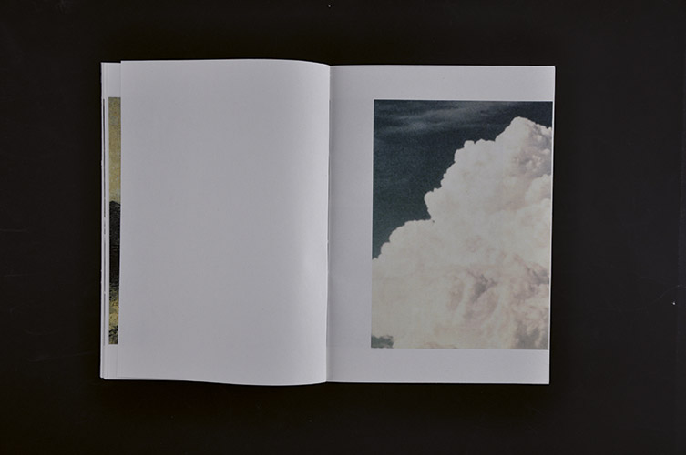
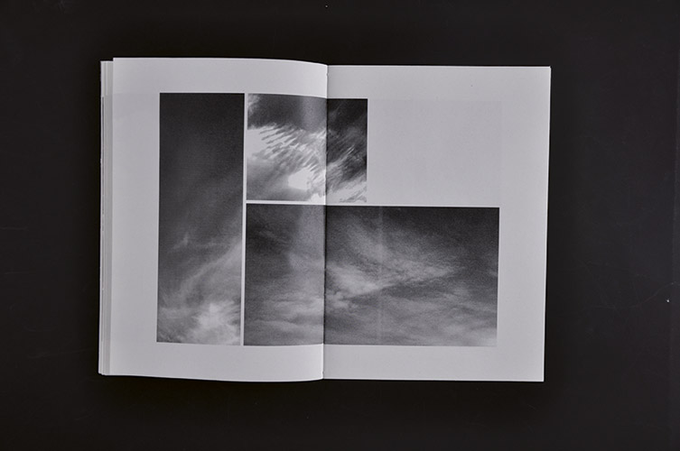
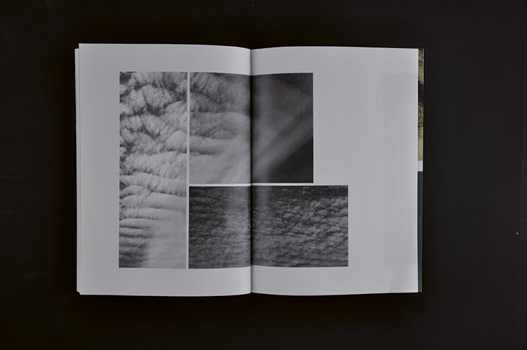
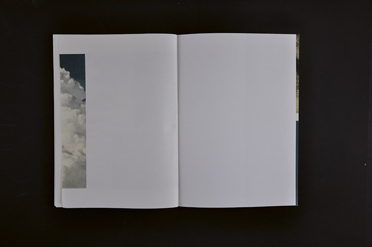
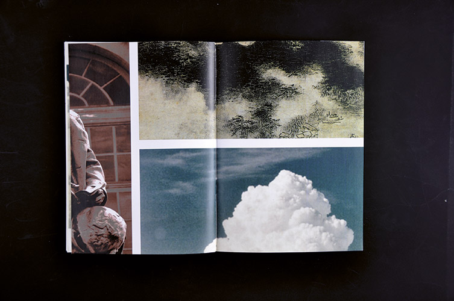
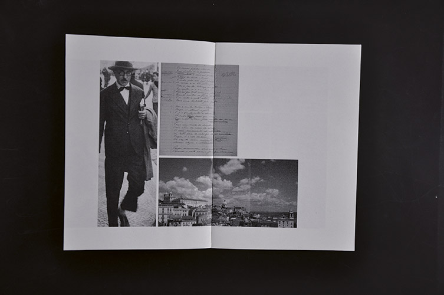
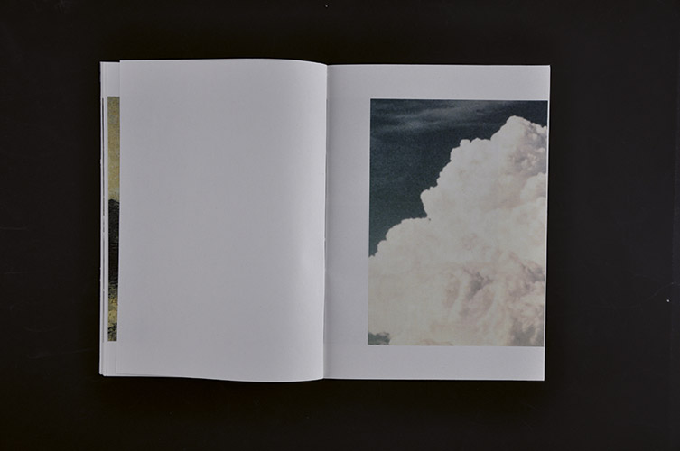
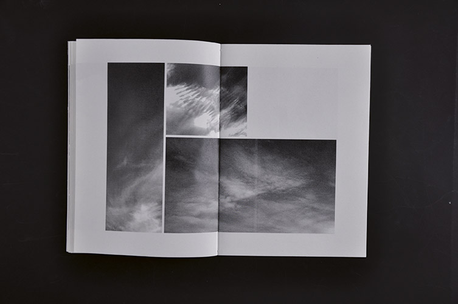
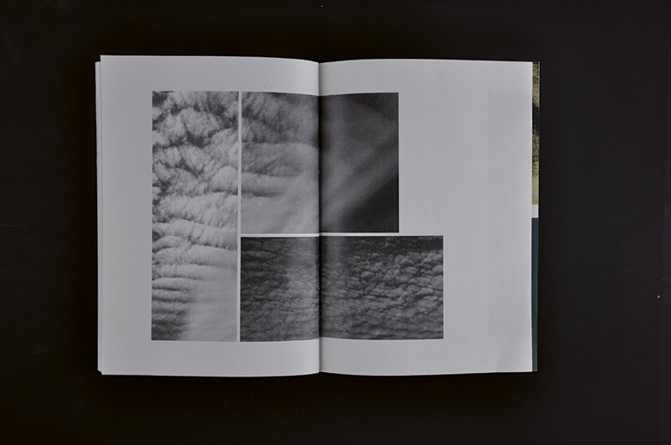
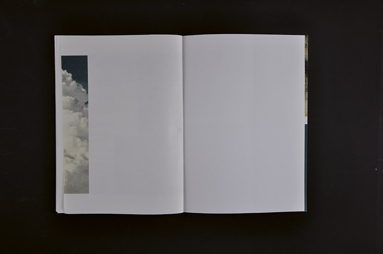
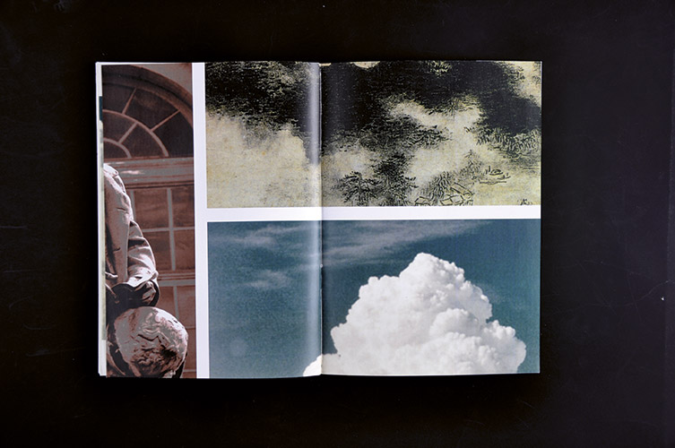
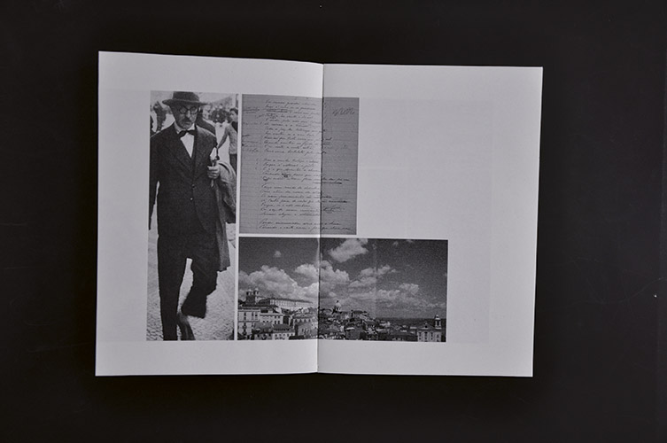
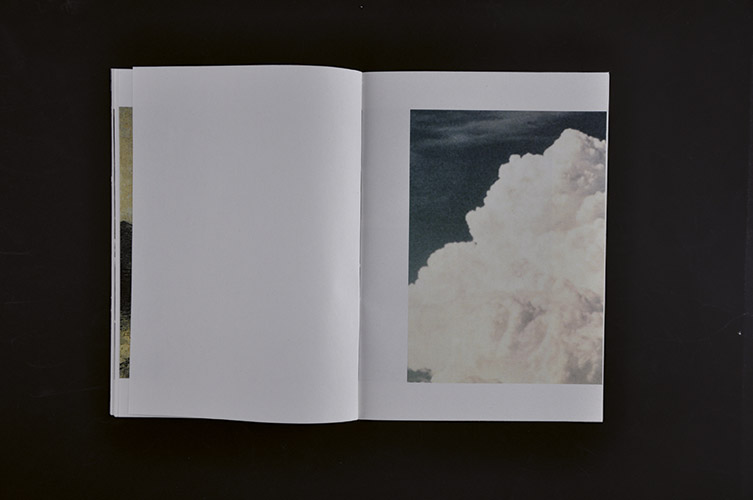
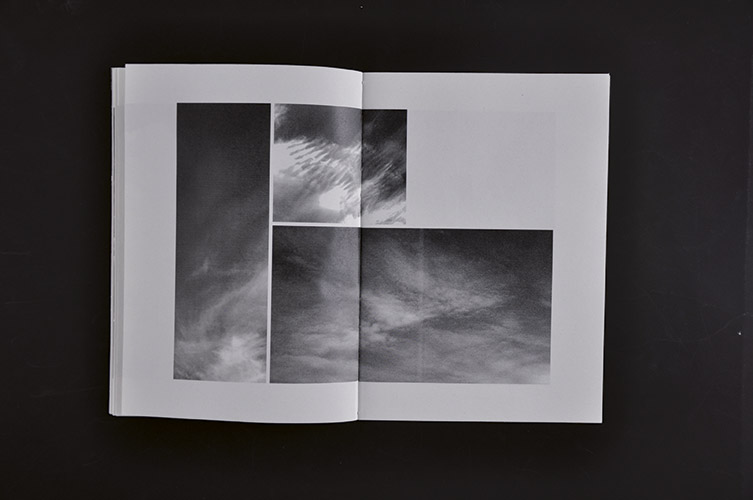
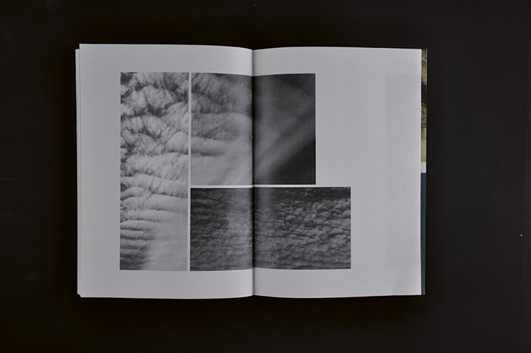
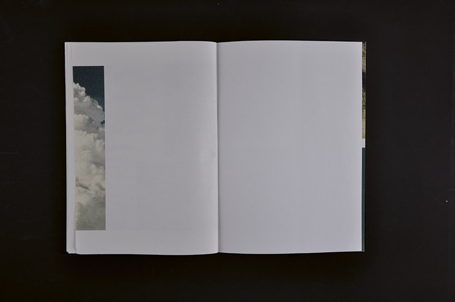
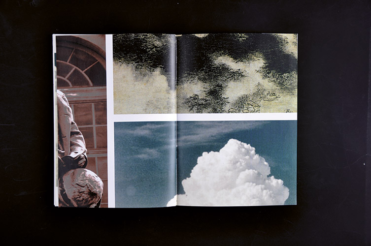